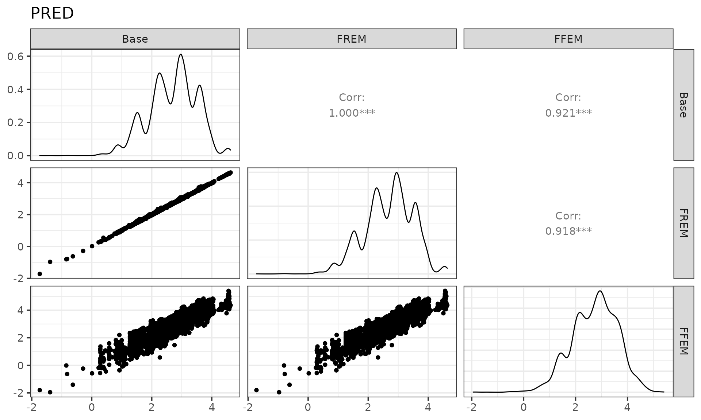
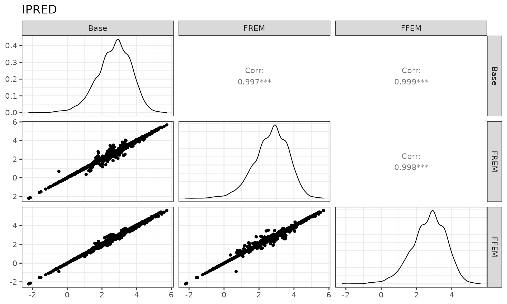
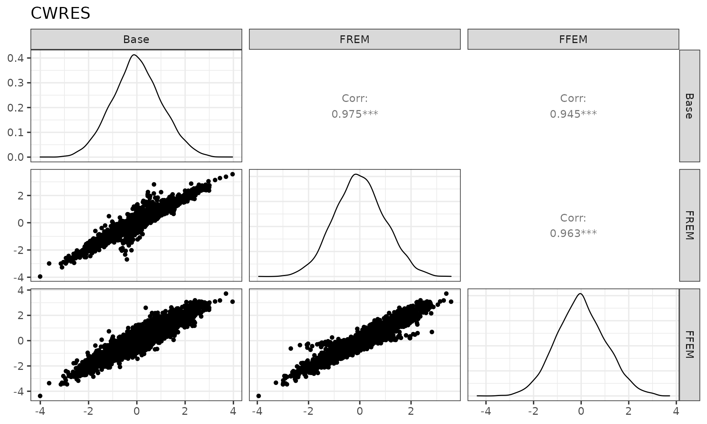
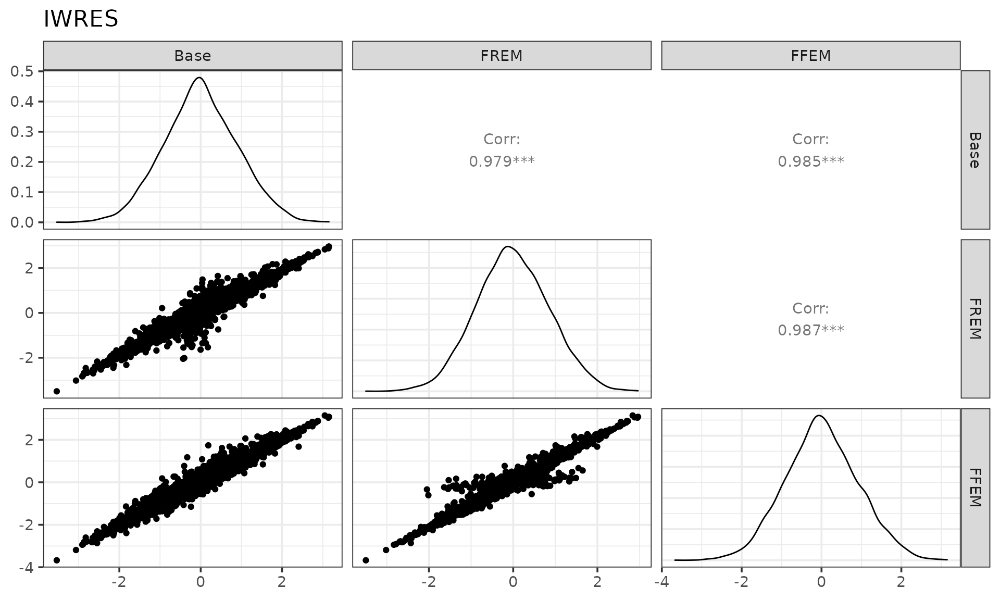
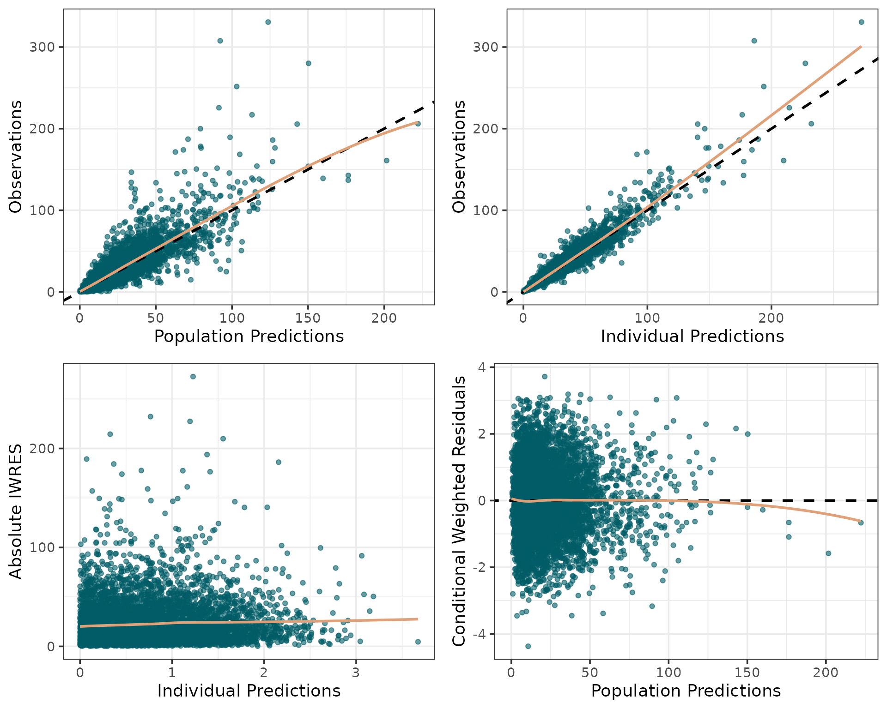
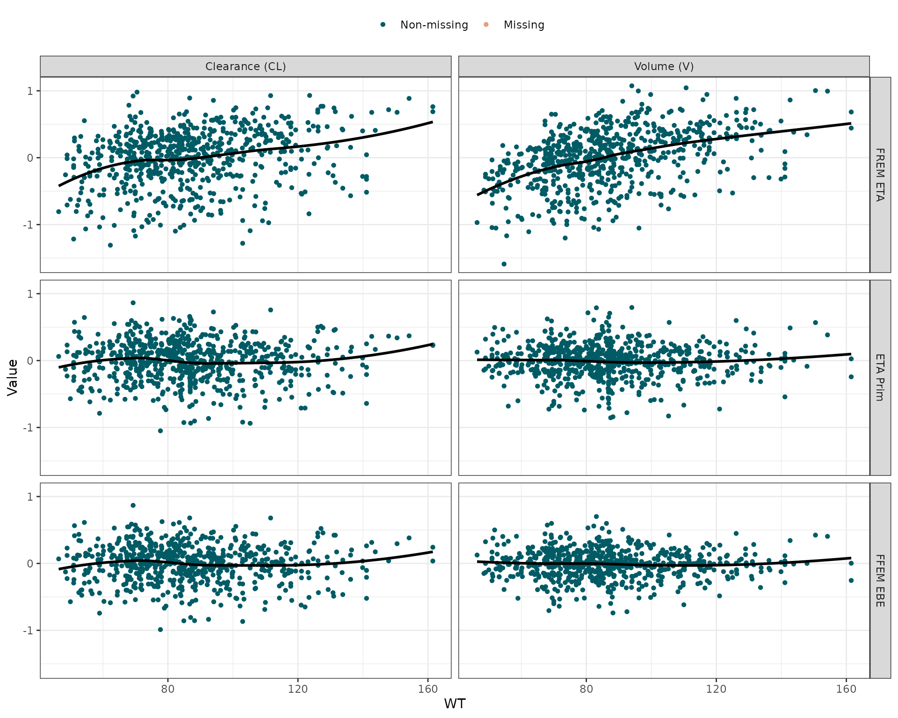
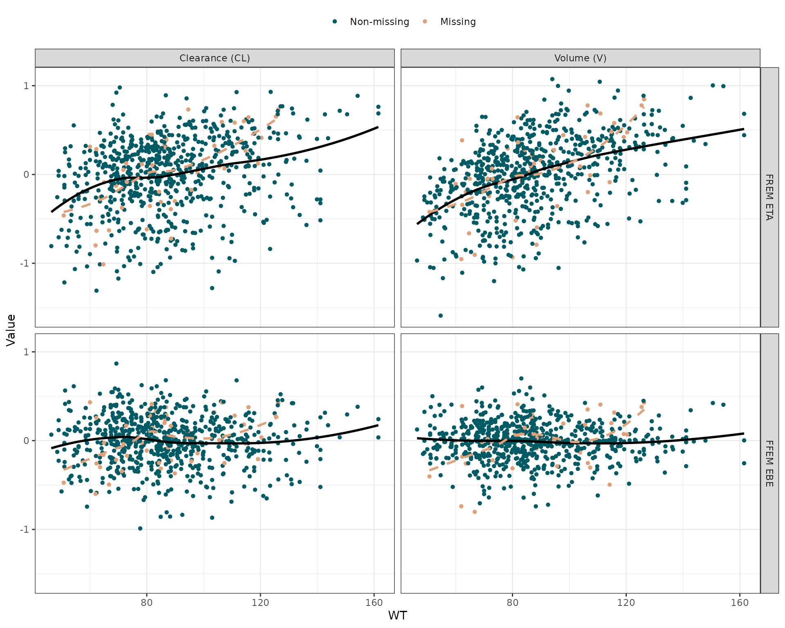
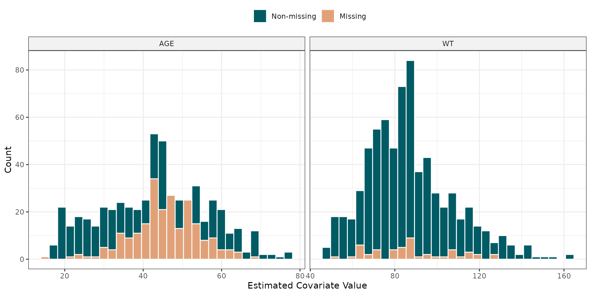

3. Deep Dive: Standard diagnostics and ETAs
Part3-deep-dive-diagnostics-and-etas.RmdIntroduction
Just like with any other model, it is important to check that FREM models satisfy basic diagnostic tests, for example, goodness-of-fit (GOF) plots of DV versus PRED and CWRES versus TIME. Unlike standard models, some variables of interest are not directly available from the FREM model itself but must be derived based on an FFEM version of the model.
library(PMXFrem)
library(GGally)
library(ggplot2)
library(dplyr)
library(data.table)
theme_set(theme_bw(base_size = 14))
# Setup Paths
modDevDir <- system.file("extdata/SimNeb", package="PMXFrem")
dataFile <- system.file("extdata/SimNeb/DAT-2-MI-PMX-2-onlyTYPE2-new.csv", package="PMXFrem")
fremRun <- 31
baseRun <- 301. Comparison of Diagnostics: Base, FREM, and FFEM
To understand why we generate an FFEM model for diagnostics, we extract the structural predictions and residuals from the Base, FREM, and FFEM models and compare them side-by-side.
xptabBase <- fread(paste0(modDevDir, "/xptabmax0", baseRun), data.table = FALSE, check.names = TRUE) %>%
filter(BLQ == 0, EVID == 0) %>% arrange(ID, TAD)
xptabFFEM <- fread(paste0(modDevDir, "/xptabmax0", fremRun), data.table = FALSE, check.names = TRUE) %>%
filter(BLQ == 0, EVID == 0) %>% arrange(ID, TAD)
xptabFREM <- fread(paste0(modDevDir, "/xptab", fremRun), data.table = FALSE, check.names = TRUE) %>%
filter(BLQ == 0, EVID == 0, FREMTYPE == 0) %>% arrange(ID, TAD)
cwresData <- bind_cols(Base = xptabBase$CWRES, FREM = xptabFREM$CWRES, FFEM = xptabFFEM$CWRES)
iwresData <- bind_cols(Base = xptabBase$CIWRES, FREM = xptabFREM$CIWRES, FFEM = xptabFFEM$CIWRES)
predData <- bind_cols(Base = xptabBase$CPRED, FREM = xptabFREM$CPRED, FFEM = xptabFFEM$CPRED)
ipredData <- bind_cols(Base = xptabBase$CIPREDI, FREM = xptabFREM$CIPREDI, FFEM = xptabFFEM$CIPREDI)PRED

The PREDs are the same between Base and FREM since the structural \(\theta\) parameters are the same and no covariates affect the typical individual parameters. FFEM is different from the others due to the inclusion of deterministic covariates.
\[ \begin{aligned} \mathrm{PRED}_{Base} &= f(\theta_{base},\eta_i=0) \\ \mathrm{PRED}_{FREM} &= f(\theta_{base},\eta_i=0)\\ \mathrm{PRED}_{FFEM} &= f(\theta_{base},\theta_{cov},X_{cov},\eta_i=0) \end{aligned} \]
IPRED

The IPREDs are different between Base and FREM due to \(\eta\) being estimated with different \(\Omega\) matrices. It is different for the FFEM model due to the fixed covariates and the \(\Omega_{prim}\).
\[ \begin{aligned} \mathrm{IPRED}_{Base} &= f(\theta_{base},\eta_i=\eta_{base}) \\ \mathrm{IPRED}_{FREM} &= f(\theta_{base},\eta_i=\eta_{FREM})\\ \mathrm{IPRED}_{FFEM} &= f(\theta_{base},\theta_{cov},X_{cov},\eta_i=\eta_{prim}) \end{aligned} \]
where \(\eta\) is estimated by:
\[ \eta_i = \operatorname*{arg\,max}_\eta l_i + \log({pdf(\eta_i;\Omega)}) \]
where \(l_i\) is the individual likelihood and \(pdf\) is the probability density function of a normal distribution with variance \(\Omega\).
CWRES

The CWRES are not the same. This is due to differences in population variance as well as IPRED, \(\eta\), and \(\Omega\).
\[ \begin{aligned} \mathrm{CWRES}_i &= \frac{y_i - E[y_i]}{Var[y_i]^2}\\ E[y_i] &= \mathrm{IPRED}_i - \eta_i\frac{ \delta \mathrm{IPRED}_i^T}{\delta\eta_i}\\ Var[y_i] &= \frac{\delta \mathrm{IPRED}_i}{\delta \eta_i}\Omega\frac{\delta \mathrm{IPRED}_i^T}{\delta \eta_i} + \Sigma \end{aligned} \]
IWRES

The IWRES are not the same, mainly due to differences in IPRED but also the residual error model if it depends on IPRED.
\[ \begin{aligned} \mathrm{IWRES}_i &= \frac{y_i - \mathrm{IPRED}_i}{R_i^2}\\ R_i &= diag \left( \frac{\delta res}{\delta \varepsilon_i} \Sigma \frac{\delta res^T}{\delta \varepsilon_i} \right) \end{aligned} \]
2. Creating Basic GOF Plots
Because the FFEM provides the correct conditional metrics, we use its output (xptabmax031) to evaluate the structural fit. We filter out observations with missing WRES and BLQ values.
## DV vs PRED
p1 <- ggplot(xptabFFEM, aes(exp(CPRED), exp(DV))) +
geom_point(color="#005B65", alpha = 0.6) +
geom_abline(slope = 1, intercept = 0, size=1, linetype="dashed") +
geom_smooth(se = FALSE, color="#E1A178", method="loess") +
xlab("Population Predictions") + ylab("Observations")
## DV vs IPRED
p2 <- ggplot(xptabFFEM, aes(exp(CIPREDI), exp(DV))) +
geom_point(color="#005B65", alpha = 0.6) +
geom_abline(slope = 1, intercept = 0, size=1, linetype="dashed") +
geom_smooth(se = FALSE, color="#E1A178", method="loess") +
xlab("Individual Predictions") + ylab("Observations")
## abs(IWRES) vs IPRED
p3 <- ggplot(xptabFFEM, aes(abs(CIWRES), exp(CIPREDI))) +
geom_point(color="#005B65", alpha = 0.6) +
geom_smooth(se = FALSE, color="#E1A178", method="loess") +
xlab("Individual Predictions") + ylab("Absolute IWRES")
## CWRES vs PRED
p4 <- ggplot(xptabFFEM, aes(exp(CPRED), CWRES)) +
geom_point(color="#005B65", alpha = 0.6) +
geom_abline(slope = 0, intercept = 0, size=1, linetype="dashed") +
geom_smooth(se = FALSE, color="#E1A178", method="loess") +
xlab("Population Predictions") + ylab("Conditional Weighted Residuals")
gridExtra::grid.arrange(p1, p2, p3, p4, ncol=2, nrow=2)
3. Creating ETA Diagnostics
Similarly to the standard diagnostic variables, ETAs must also be adjusted to reflect the impact of covariates (i.e., \(\eta_{prim}\)). PMXFrem manages this extraction via calcEtas(). By specifying the ffemModName, we can simultaneously extract the true Empirical Bayes Estimates (EBEs) from the FFEM model to visualize covariate absorption. We set appendMissingFlags = TRUE so we can later evaluate how the model handles missing covariates.
# Load clinical data
clin_data <- read.csv(dataFile) %>%
filter(BLQ != 1)
# Calculate ETAs, ETA Prims, and EBEs
ind_params <- calcEtas(
runno = fremRun,
modDevDir = modDevDir,
numSkipOm = 2,
numNonFREMThetas = 7,
dataFile = clin_data,
parNames = c("CL", "V", "MAT"),
ffemModName = "run31max0",
appendMissingFlags = TRUE
)3.1 Evaluating ETA - Covariate correlation
Plotting the raw FREM ETA versus a covariate will show a strong correlation. However, the ETA_PRIM (and its counterpart, the FFEM EBE) should be completely flat, indicating that the FREM covariance matrix successfully captured the covariate effect. We visualize this using the plotEtasCov() function.
By default, this function plots only the observed covariates, giving a clear view of the underlying relationship.
plotEtasCov(
df = ind_params,
covName = "WT",
etaNames = c("ETA3", "ETA4"),
etaTypes = c("FREM", "Prim", "EBE"),
etaLabels = c("Clearance (CL)", "Volume (V)"),
typeLabels = c("EBE" = "FFEM EBE", "Prim" = "ETA Prim", "FREM" = "FREM ETA")
)
3.2 Visualizing the Handling of Missing Data
FREM handles missing data by integrating it out of the likelihood. We can visualize the resulting estimates for individuals with missing baseline covariates by enabling the showMissing argument. A separate smoothing line can optionally be fitted through these points to evaluate where the model places these individuals relative to the observed cohort.
plotEtasCov(
df = ind_params,
covName = "WT",
etaNames = c("ETA3", "ETA4"),
etaTypes = c("FREM", "EBE"),
etaLabels = c("Clearance (CL)", "Volume (V)"),
typeLabels = c("EBE" = "FFEM EBE", "FREM" = "FREM ETA"),
showMissing = TRUE,
smoothMissing = TRUE,
smoothMissingLinetype = "dashed"
)
3.3 Marginal Distributions of Missing Covariates
Finally, the marginal distributions of the estimated covariates can be visualized using histograms. The plotCovDist() function maps these estimates, grouped by their original missingness status.
plotCovDist(
df = ind_params,
covNames = c("WT", "AGE"),
plotType = "histogram",
scales = "free_x",
ncol = 2
)